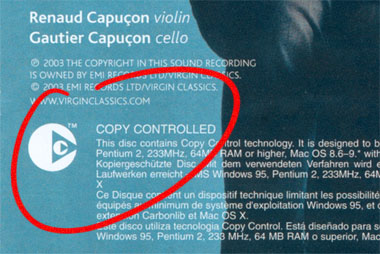

Weblog tegen Copy Control
zondag 23 november 2003 | Kommer
Verdorie! Het is toch niet waar zeker! Toen ik gisteren mijn nieuwe aanwinsten in MP3 wou omzetten, stootte ik op bijzonder onaangename verrassing. Eén van de cd’s (Virgin) was beveiligd met Copy Control Technology. Dat houdt in dat elke MP3 ripper, zoals ook mijn trouwe EAC, crasht op deze schijf. Bovendien kan je de cd op een computer uitsluitend afspelen met de meegeleverde player.
Na een rondje google’en kwam ik tot de conclusie dat deze beveiliging voorlopig niet te kraken valt (en ik die dacht dat alles al gekraakt was). Natuurlijk blijft er altijd één mogelijkheid over, al boet je in aan kwaliteit: de cd gewoon opnemen met een audioprogramma, compresseren en handmatig id3-tags toevoegen. Een omslachtig, maar efficiënt karwei.
Ik speel mijn muziek altijd af via de computer (die verbonden is met de stereo). De originele cd’s bewaar ik liever in de kast, ver weg van stof en krassen. Als ik 15 euro betaal voor een cd wil ik met die cd kunnen doen wat ik wil: de nummers op mijn toekomstige iPod afspelen bijvoorbeeld (droom, droom). Gek eigenlijk: stel dat alle cd’s met Copy Control beveiligd zijn, dan krijg je op een draagbare MP3 speler alleen illegale bestanden!
Ik voel me echt bedrogen door Virgin, en ik hoop dat hun Copy Control binnen de kortste keren gekraakt wordt. Dit lijkt me in ieder geval geen goede manier om illegaal kopiëren tegen te gaan, zeker niet nu de grenzen tussen verschillende media (computer, cd, dvd, mp3-speler) alsmaar kleiner worden.

Appie Verschoor op 23 november 2003
Het verbaast me dat EAC deze niet rippen wilde. Zlefs niet nadat je had gezegd dat de TOC manueel gevonden moest worden? Tot nu toe heb ik alle Copy Controlled cd’s kunnen rippen, waarna je ze naar de winkel mag terugbrengen met de opmerking dat het geen cd is, en dat je er niets mee kan.